Hybrid models combine data-driven models with theory-based (e.g., scientific/engineering) models to improve overall model performance and generalisation beyond the training data. Here we consider hybrid models with losses of the form: \[\text{overall loss} = \text{data loss} + \lambda\times \text{model loss}.\]
The ‘data loss’ term is a standard (training) data fit term such as sum of squared errors. The ‘model loss’ term measures the distance of a proposed model from some theoretical (engineering, physics, biology etc.) model. The regularisation parameter\(\lambda\), a type of hyperparameter, determines the balance between agreement with the data and agreement with the theoretical model. The term ‘regularisation’ in this context essentially refers to a form of soft constraint that (deliberately) biases the model towards desirable solutions (stable, physical, interesting etc.) in a way that goes beyond the available data. Hence here it contributes to the overall loss above and beyond the data loss. Unlike a hard constraint, which strictly enforces a condition, a soft constraint allows for some deviation but discourages larger deviations.
Note: Here we are looking at explicit regularisation via a penalty term. A common assumption in standard machine learning, in contrast, is that implicit regularisation via the training method, in particular forms of stochastic gradient descent, typically provides sufficient regularisation even for very large models like deep neural networks, and that more traditional penalty terms are often not required. The downside is that we have no guarantees on the types of bias we are introducing. Areas such as scientific/engineering/physics-informed machine learning hence still typically (at least currently) use explicit regularisation to ensure the biases are of the desired type.
Linear data models: Using basis functions
We have already considered linear models in the previous section. As discussed there, linear models represent the response variable as a linear combination of columns of the design or feature matrix: \[y \approx Xw\] for response vector \(y\), design matrix \(X\), and weight (parameter) vector \(w\).
When dealing with dynamic, continuous-time physical systems it can be useful to use pre-chosen smooth functions as our features. When expanding our response as a linear combination of such functions we often refer to these as basis functions (as in e.g., Fourier series): \[
y(t) \approx \sum_{j=1}^n b_j(t)w_j.
\] Although these functions can in principle be evaluated for any time point, we typically assume we have a discrete set of observation times \(t_i, i=1,\dots,m\). This leads to a system, defined at the observations, in the same form as our design matrix expression: \[
y \approx Bw
\] where \(y_i = y(t_i)\), \(w\) is the weight vector with \(j\)th entry \(w_j\), and the \(j\)th column of \(B\) is a vector with entires \(b_j(t_i)\). That is, here our design matrix is \(X = B\).
We will consider an example of such basis functions shortly. Firstly, however, we need to consider two different ‘time grids’ of interest.
Underlying time grid vs. observation time grid
If we are dealing with a dynamic physical system it is often reasonable to suppose the underlying dynamics are either continuous in time or at least defined for a fine time grid that is finer than our observation time grid (similar ideas apply for spatial/spatiotemporal systems). For example, the underlying dynamics might be solved with an ODE solver that discretises time into a grid of \(p\) points. In contrast, we may only have actual data observations of the system at \(m \ll p\) points. The observation grid may or may not be regular. See the figure below.
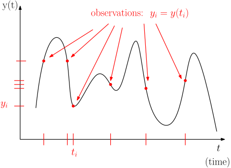
When considering physics-based regularisation, it can be useful to introduce both grids explicitly, along with a linear mapping between them, represented by an observation matrix (or an observation operator).
Observation matrix
Consider a standard basis vector (not to be confused with our basis functions above!): \[
e_j = \begin{bmatrix}0\\0\\ \vdots\\1\\0\\ \vdots\\0\end{bmatrix} \leftarrow j\text{th entry}.
\] The effect of multiplying an \(m\) by \(n\) matrix \(M\) by \(e^T_j\) on the left is \[
e^T_j M = \text{row}_j(M)
\] i.e. it picks out the \(j\)th row of \(M\). (Note: multiplying by \(e_j\) on the right picks out the \(j\)th column – recall the ‘linear combination of columns’ interpretation of matrix multiplication).
If we recall that, for design matrices, each row corresponds to an observation, we can model the process of taking a ‘coarser’ set of observations of a vector \(y\) defined on a fine time grid by \[
y_{\text{obs}} = A_{\text{obs}}y
\] where \(y_{\text{obs}}\) is the vector of observed points and \(A_{\text{obs}}\) is the ‘observation matrix’ that has a row \(e^T_j\) for any grid point \(j\) that we have an observation for.
If our underlying fine-grid variable \(y\) is modelled as a finely-discretised basis function expansion \[
y \approx Bw,
\] we can model our coarse-grid observations as \[
y_{\text{obs}} = A_{\text{obs}}y \approx A_{\text{obs}}Bw = B_{\text{obs}}w
\] where \(B_{\text{obs}} = A_{\text{obs}}B\) is the matrix containing the basis functions evaluated at the observation points. That is, \(A_{\text{obs}}\) picks out the rows of the matrix\(B\) corresponding to observations, just like it does with vectors.
Whether or not we explicitly model the two different time grids depends on the application.
For standard, ‘pure’ data modelling we usually work with \(B_{\text{obs}}\) directly and don’t worry about introducing an explicit observation matrix; however, when introducing a theory/physics/engineering-based model as well, we usually want to enforce this model on the fine-time grid rather than just the coarse observation grid.
The basic idea is that we typically assume theory-based model holds at all time points, not just those we’ve observed. This allows us to provide predictions for, or constraints on model behaviour at, points we haven’t observed. Of course, sometimes we take the grids to be the same for simplicity.
Example
Suppose our \(B\) matrix consists of two columns, \(\sin(t)\) and \(\sin(2t)\), evaluated on a fine time grid \(t_i\), of points between \(t_1 = 0\) and \(t_p=12\), for \(p=100\). This means \(B\) has 100 rows and 2 columns. Then, suppose we take as observations every 10th point, starting from the first, giving 10 observation indices.
Here red squares indicate the observed data points and blue dots (including at red square locations) indicate the ‘fine’ time grid points.
B-Spline basis functions
We can represent a range of smooth functions of time with splines, i.e. piecewise polynomials defined by various conditions such as the degree of the polynomials used and the properties at the ‘join’ points, where these join points are called knots. To construct a spline we can use basis functions; here we will use so-called B-Spline basis functions. For this course we don’t need to know much about these other than how to obtain them from a Python library. However the following facts may be useful:
Any spline of made up of degree \(d\) polynomials (\(d\) being the highest power of the component polynomials) can be represented as a linear combination of B-Splines of the same degree.
Splines are defined by the degree of the polynomials and the location of the internal knots where the polynomials join. The term ‘knot’ refers to internal knots in general (i.e. excluding boundary points).
At (non-repeated) knots the spline has \(d-1\) continuous derivatives. E.g. for a piecewise linear spline, i.e. \(d=1\), the first derivative is not continuous at the knots, though the value (‘zeroth derivative’) is (\(d-1=0\) if \(d=1\)).
Many libraries for constructing spline bases take the polynomial degree and either the knot locations or a parameter called ‘degrees of freedom’, \(\nu\). With the Patsy settings used below, setting df to \(\nu\) gives \(\nu\) spline columns, excluding the separately added constant. The number of internal knots is \(\nu-d\). If their locations are unspecified, Patsy uses equally spaced quantiles of the supplied time values; these need not be equally spaced in time.
Many libraries for constructing the ‘design matrices’ – matrices with basis functions as columns – automatically add a constant vector of all ones. We can explicitly add it with statistical formulae such as ‘1 \(+\) basis functions’, or remove it with formulae like ‘basis functions \(-\) 1’.
B-Spline basis functions
Many languages such as R, Python, MATLAB, Julia etc have B-Splines available. Below is an example of how to obtain B-Spline bases of different sizes, along with an intercept/constant term, using the Python library Patsy. This is installed in Google Colab by default.
# Four cubic basis functions # number of implied knots = 4-3 = 1, # as well as one constant function. # Number of columns of B is 4 + 1 = 5.from patsy import dmatrices, dmatrix# time gridt = torch.linspace(0., 5., 1000)# design matrix as tensorB1 = torch.tensor( dmatrix("1 + bs(t, df=4, degree=3)", {"t": t}))# Six cubic basis functions, # number of implied knots = 6-3 = 3, # as well as one constant function. # Number of columns of B is 6 + 1 = 7.B2 = torch.tensor( dmatrix("1+bs(t, df=6, degree=3)", {"t": t}))
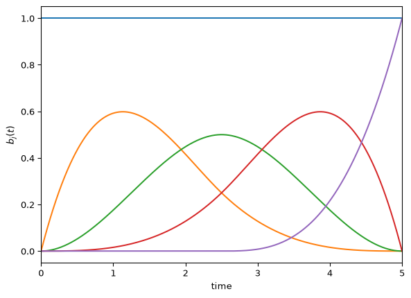
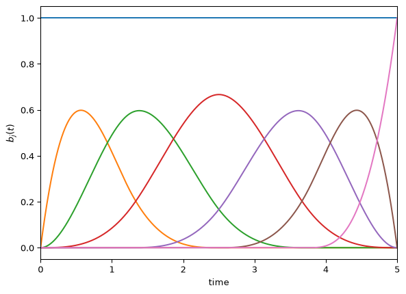
print(B1.shape)print(B2.shape)
torch.Size([1000, 5])
torch.Size([1000, 7])
Example fit
Suppose our true data is a coarse, and noisy version of our sin combination used above. Let’s fit a B-Spline basis to it with linear least squares. First generate data:
t = torch.linspace(0,12,100, dtype=torch.float32)B = torch.stack([torch.sin(t),torch.sin(2*t)],dim=1)w = torch.tensor([2,3],dtype=torch.float32)y = B@w # observation matrix for observed pointsobs_indices = torch.arange(0,100,10, dtype=torch.int)A_obs = torch.eye(len(y),dtype=torch.float32)[obs_indices]# noisetorch.manual_seed(44)noise = torch.randn(A_obs.shape[0]) *0.5# extract at observation points and add noisey_obs = A_obs@y + noiset_obs = A_obs@t
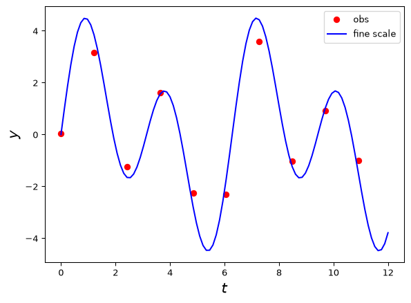
Example fit
Now, let’s fit a spline basis to the data.
# 15 cubic basis functions, # number of implied knots = 15-3 = 12, # as well as one constant function. # Number of columns of B is 15 + 1 = 16.B = torch.tensor( dmatrix("1+bs(t, df=15, degree=3)", {"t": t}), dtype=torch.float32)# Solution using lstsq. # We need to include A_obs as that's how we got the datalstsq_result = torch.linalg.lstsq(A_obs@B, y_obs)w_lstsq = lstsq_result.solution# We can then get the implied fit on the fine time grid y_fitted = B@w_lstsq
Note the red shows both the observed data points and the implied fitted model. We typically don’t observe the blue directly and the red curve is an estimate of the true blue curve. Here the B-Spline basis does a reasonable job given the data is both noisy and relatively sparse.
This model is a pure data model. There is no physics or engineering knowledge as such (other than smoothness). It also requires choosing a number of basis functions – not too many, not too few.
How can we include physical information? One way is \(\dots\)
Derivative matrices
Suppose we want to include physics- or engineering-based knowledge in the form of approximately-enforced differential equations into a data model like a spline basis approximation. We can represent derivatives on our fine time grid by using finite difference matrices. These map a vector defined on a fine grid (e.g. of points in time or space) to a new vector of derivatives of the input vector. For example: \[D =
\frac{1}{\Delta t}\begin{bmatrix}-1 & 1& 0& 0& 0& \ldots\\
0& -1& 1& 0& 0& \ldots\\
\vdots & \vdots& \vdots& \vdots& \vdots& \vdots\\
0 & 0 & \ldots & 0& -1& 1 \end{bmatrix}\] Note that for a vector \(y\) containing values \(y_1, y_2, \dots, y_m\) we have \[Dy = \frac{1}{\Delta t}\begin{bmatrix}y_2 - y_1\\y_3-y_2\\\vdots\\y_m -y_{m-1}\end{bmatrix} = \begin{bmatrix}\frac{y_2 - y_1}{\Delta t}\\\frac{y_3 - y_2}{\Delta t}\\\vdots\\\frac{y_m - y_{m-1}}{\Delta t}\end{bmatrix} \] which is a vector that contains backward difference approximations to the derivative at all time points starting from the second time point.
The vector here has dimension of one less than the input vector, which corresponds to the idea that a first order differential equation usually needs to be supplemented by an additional initial condition, and hence an additional entry in the vector. This is not so important here as the data will play the role of initial conditions.
We can define second and third (etc) order derivative matrices similarly, and can also obtain these by (carefully) multiplying the first derivative matrix by itself the corresponding number of times (we need to be careful of initial/boundary conditions and dimensions as usual). This represents repeated differentiation. We usually lose one row per application of the first derivative matrix, just as e.g. a second-order differential equation requires two initial/boundary conditions.
Example
t = torch.linspace(0,12,100, dtype=torch.float32)dt = t[1]-t[0]; N =len(t)y = torch.sin(t)D = torch.zeros(N-1, N)# Use 'fancy indexing' to assign values to diagonalsD[torch.arange(0, N-1), torch.arange(0, N-1)] =-1/dtD[torch.arange(0, N-1), torch.arange(1, N)] =1/dtprint(D*dt) #multiply by dt to get difference matrix part
# first derivative, backward diffprint(D*dt)# second derivative, backward diffprint(D[1:,1:]@D*dt**2)# third derivative, backward diffprint(D[2:,2:]@D[1:,1:]@D*dt**3)
Given a simple differential equation \[\frac{dy}{dt} = 0,\] this can be approximated by \[Dy = DBw = 0\] where \(D\) is the first-order derivative matrix, \(B\) is a basis matrix (e.g. B-Splines) and \(w\) is the vector of unknown parameters (weights), assuming \(y \approx Bw\).
Rather than try to solve this exactly, we can now modify our least squares data loss function to take the form: \[
\min_w ||y_{\text{obs}} - A_{\text{obs}}Bw||^2 + \lambda ||DBw||^2.
\] where \(A_{\text{obs}}\) is our observation matrix, \(y_{\text{obs}}\) the observed data, and \(\lambda\) is a regularisation (or penalty) parameter determining how strongly to enforce the differential equation. Higher \(\lambda\) means higher penalty on deviations from \(Dy = 0\) and so the model is enforced more strongly; lower \(\lambda\) works in the opposite direction, allowing the ‘pure data model’ to dominate the fitting.
The same idea generalises to higher-order differential equations by simply taking \(D\) to be a higher-order derivative matrix.
Notes:
- We have previously solved essentially this exact problem in the last section. Here the design matrix is \(X = A_{\text{obs}}B\) and there is a penalty on \(w\) as before, except now the \(w\) in the penalty term is weighted by \(DB\). This is a minor difference that makes no real difference to implementation!
- We can use a simple difference matrix and absorb the time-step scaling into the regularisation parameter. For a first-order derivative matrix \(D\), set \(\hat{D} = (\Delta t)D\). Since the penalty uses a squared norm, the equivalent coefficient is \(\hat{\lambda} = \lambda/(\Delta t)^2\). More generally, for an \(r\)th-order derivative, use \(\hat{D}_r = (\Delta t)^r D_r\) and \(\hat{\lambda} = \lambda/(\Delta t)^{2r}\).
Let’s look at how to ‘stack and solve’ these problems!
Stacking
Following the ideas of the previous section, we can write \[
||y_{\text{obs}}-A_{\text{obs}}Bw||^2 + \lambda ||DBw||^2 = \Big|\Big|\begin{bmatrix} y_{\text{obs}}-A_{\text{obs}}Bw\\ \sqrt{\lambda}DBw\end{bmatrix}\Big|\Big|^2
\] We can further write the right-hand side as the augmented system \[
\Big|\Big|\begin{bmatrix} y_{\text{obs}}-A_{\text{obs}}Bw\\ \sqrt{\lambda}DBw\end{bmatrix}\Big|\Big|^2 = \Big|\Big|\begin{bmatrix} y_{\text{obs}}\\ 0 \end{bmatrix} - \begin{bmatrix}A_{\text{obs}}B\\\sqrt{\lambda}DB \end{bmatrix}w\Big|\Big|^2
\] where \(0\) is a (sub)vector of zeros with length equal to the number of rows of \(D\). This gives a linear system of the form: \[
\Big|\Big| \tilde{y} - \tilde{X}w\Big|\Big|^2
\] where \[\tilde{y} = \begin{bmatrix} y_{\text{obs}}\\ 0 \end{bmatrix}, \ \ \ \tilde{X} = \begin{bmatrix}A_{\text{obs}}B\\\sqrt{\lambda}DB \end{bmatrix}\] So to solve the penalised linear least squares problem we can solve the standard linear least squares problem in augmented form: \[
\min_w \Big|\Big| \tilde{y} - \tilde{X}w\Big|\Big|^2
\] just as before!
Notes:
- This approach works for differential equations giving the discrete form \(Dy = 0,\), \(Dy = \text{constant}\), or \(Dy = Ay\), for \(D\) an abitrary derivative matrix and \(A\) a known matrix.
- Differential equations of the form \(Dy = f(y)\) lead to nonlinear systems of equations in this approach; if \(A\) is unknown then this is true even for \(f(y) = Ay\).
- We can sometimes differentiate the system more times to get our equation in the desired form, however.
Example
Consider our projectile problem with observed data as shown:
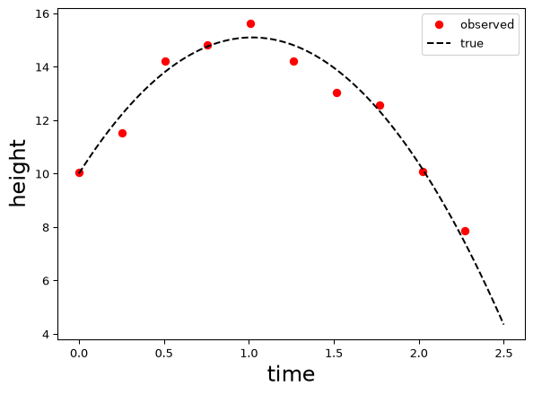
We can fit a spline + ODE model by writing our ODE \[
\frac{d^2y}{dt^2} = -g
\] as \[
\frac{d^3y}{dt^3} = 0
\] which treats \(g\) as unknown. We can implement this as follows\(\dots\)
Example continued
t_grid = torch.linspace(0,2.5,100)N =len(t_grid)# spline basis. Can use lots when have diff. eqn!B = torch.tensor( dmatrix("1+bs(t, df=30, degree=3)", {"t": t_grid}), dtype=torch.float32)# observation matrix for observed pointsobs_indices = torch.arange(0,100,10, dtype=torch.int)A_obs = torch.eye(len(t_grid),dtype=torch.float32)[obs_indices]# first derivative matrixD = torch.zeros(N-1, N)# Use 'fancy indexing' to assign values to diagonalsD[torch.arange(0, N-1), torch.arange(0, N-1)] =-1D[torch.arange(0, N-1), torch.arange(1, N)] =1# get third difference matrixD3 = D[2:,2:]@D[1:,1:]@D# Augment the design matrix and observation vector lambda_reg = torch.tensor(1e5, dtype=torch.float32)X_aug = (torch.cat([A_obs@B, torch.sqrt(lambda_reg) * D3@B], dim=0))y_aug = torch.cat([y_data, torch.zeros(D3.shape[0])])# solvelstsq_result = torch.linalg.lstsq(X_aug, y_aug)w_lstsq = lstsq_result.solution# Get the implied fit on the fine time grid y_fitted = B@w_lstsq
Example continued
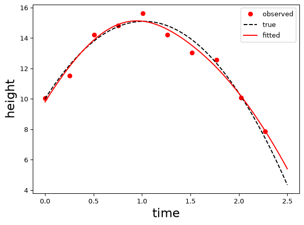
Compare this to the pure spline fit with the same number of basis functions:
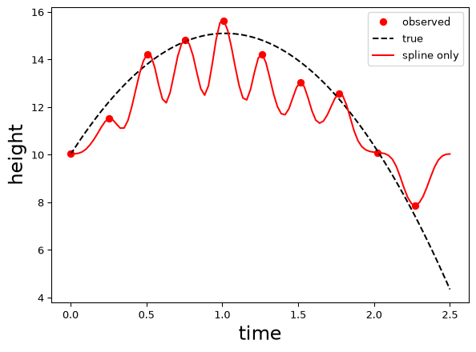
Notes
Note that
The pure spline fit fits the training data better (it interpolates it), but fits the (unseen) test data worse.
In contrast, the ODE-penalised fit fits the training data worse but generalises to unseen data better.
This is a common phenomenon! For this and related reasons, statisticians and modellers have traditionally advised against exactly fitting the training data in the name of avoiding overfitting.
However, the main concern is not so much having ‘too good’ of a fit to the training data, rather the concern that this may not be representative of the ability to fit the test data.
One of the more surprising observations of modern machine learning is there are models that exactly fit the training data and yet generalise well to new data. One perspective on this is that away from data points the regularisation or structural assumptions dominate, and that it is possible to both fit the training data well and generalise well, if we also have good regularisation/structural assumptions.
In the present course, however, we will typically see the traditional wisdom – of sacrificing some fit to the training data in order to get better fit to unseen data – hold up.
This relates to the topic of\(\dots\)
Choosing regularisation parameters
So far we have pre-specified the regularisation parameter. In both the pseudo-inverse and physics-informed cases we have general guidelines for setting this: for the pseudo-inverse we set it to be ‘small but not zero’. For a physics model we set it to be ‘large’ if we think the model is correct. What about in general? Can we use the data to determine a ‘good’ value?
One issue is that \(\lambda\) controls the ability to fit unseen data: it involves a loss term evaluated at points other than the training data (e.g. the fine time scale). If we fit its value based just on the training data, and the data model component is capable of fitting the training data exactly, the optimal value will be zero (why?)!
A strategy around this, is to set regularisation/generalisation/hyperparameters like \(\lambda\) based on the ability of the fitted model to predict data it wasn’t trained on. The simplest way to do this is to split our original training dataset into a smaller training data subset and a non-overlapping validation subset (you will have seen this idea already!). We fit the model on the training subset for various \(\lambda\) values and use these models to predict the unfitted validation set. We use the \(\lambda\) value that leads to the best predicting model. This mimics the process of fitting a model to training data and evaluating on test data, and hence provides information about ‘generalisation’ ability (under assumptions such as exchangeable or IID data, however!).
This approach falls under the umbrella of the family of techniques known as cross-validation. More sophisticated variations of cross-validation, such as \(k\)-fold cross-validation, repeatedly split the training data into training and validation data subsets and assess the average performance on the validation sets. Note that we typically still have a third, separate test set that we don’t see until the final model, including hyperparameters, is developed.
Other approaches, popular in inverse problems (see ENGSCI 721), include L-curves and discrepancy principles.
Data splitting for choosing \(\lambda\)
The same splitting schemes from the first half of the course apply here. The figure below compares a single training/validation split with five-fold cross-validation for choosing \(\lambda\). We then consider how to form the splits to reflect the prediction task, including preserving subgroup proportions and using past and present observations to predict future values.
Figure 1: As indicated in the figure, we use the training data to determine the weights for each candidate \(\lambda\) (within-model inference), and the validation data to determine which \(\lambda\) to use (model selection). We then keep the chosen \(\lambda\) fixed and refit the weights using all the training and validation data, before evaluating the fitted model on the test set.
Keeping subgroup proportions similar
We can form stratified folds so that chosen categories or subgroups appear in approximately the same proportions as in the data being split. Suppose we are predicting property prices from 100 sales: 80 detached houses and 20 apartments. A stratified five-fold split could put 16 houses and 4 apartments in each fold, so that we calculate validation errors on data with the same mixture of property types as the original dataset.
There is no universally best way to stratify, and the choice depends on the target population we wish to predict for and the type of prediction task we want to assess. Keeping subgroup proportions similar can make validation scores less sensitive to the particular split. However, when we interpret those scores as performance on the target population, we are assuming that our sample is representative. For example, our 80:20 mixture of houses and apartments might have arisen partly by chance and differ from the population we want to predict for. In this case, our validation scores would give more or less weight to the prediction errors for apartments vs. houses than they would in a more representative sample.
Predicting future values
The figure below compares predicting new cases from the same population with predicting future values from earlier observations.
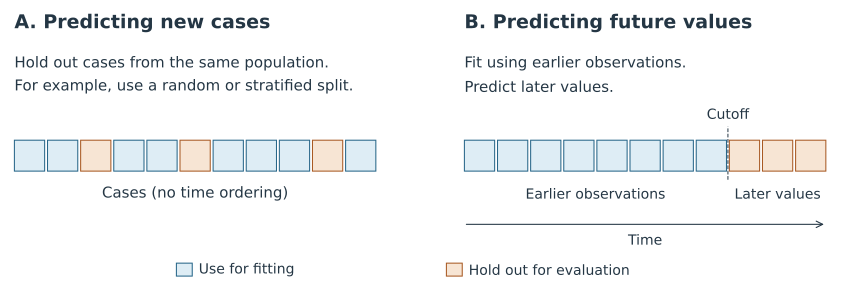
Figure 2: For new cases, we fit using the blue observations and evaluate predictions on the held-out orange observations. For future prediction, we fit using observations available at the cutoff and evaluate predictions at later times. When choosing \(\lambda\), we repeat the fitting and prediction for each candidate value and compare these validation errors.
While a random or stratified split can suit independent observations from the same population, for time-series prediction we often want to represent the ‘online’ nature of the task, where we only have access to past and present observations when predicting the future. We therefore fit using earlier observations and validate at later times. In Lab 4, we use the held-out later part of the reference trajectory to choose \(\lambda\). This explicitly checks our ability to predict beyond the fitting interval into the future, whereas withholding points within that interval can test interpolation or smoothing using observations on both sides.
We can repeat the early/later split as new observations become available. In rolling-origin evaluation, we move the prediction cutoff forward, refit using the observations then available, and predict the next interval. The figure below shows an expanding training window, with the same prediction horizon at each step.
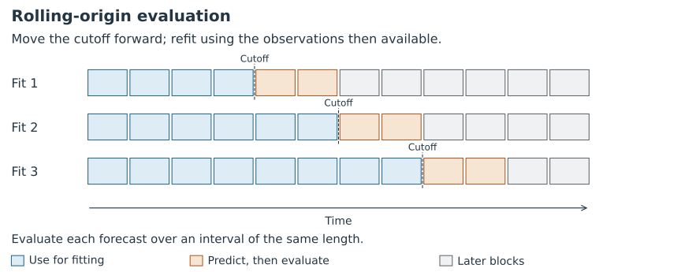
Figure 3: At each cutoff, we fit using the blue observations and predict the following orange interval. After those outcomes become available, we evaluate the predictions, advance the cutoff and refit. Observations used for validation in an earlier row can then be used for fitting in a later row. Grey blocks lie beyond the prediction interval for that row.
Later fits in this scheme use more observations. The errors can change both because we have more training data and because we are predicting a different part of the series. Averaging the errors summarises performance across these cutoffs, rather than the performance of one final fit using all available observations.
To compare candidate \(\lambda\) values, we use the same cutoffs and prediction horizon for every candidate and choose \(\lambda\) using the average validation error. We choose the first cutoff so that there are enough earlier observations to fit the model. If a final test interval is reserved, it stays outside these repeated validation checks.
If the prediction task instead uses a fixed amount of recent history, we can move a fixed-width training window forward, so that each fit uses the same number of earlier observations.
Generalised cross-validation for linear models
Generally, the more complex the model (e.g. deep neural network vs linear model), the simpler the data splitting approach is, as it can be hard/computationally expensive to implement more sophisticated methods.
For linear models, however, there is a particularly simple approximation available: generalised cross-validation. This is somewhat of a misnomer: it is an approximation to what you would obtain by carrying out ‘leave-one-out’ cross-validation for a linear model.
For time-series data, a leave-one-out fit can use observations on both sides of the omitted point. The chronological splits above instead assess prediction into the future using only earlier observations.
You don’t need to know the details, but for completeness, it minimises the following formula (representing generalisation error) to estimate \(\lambda\): \[
\text{GCV}(\lambda) = \frac{1}{m} \frac{\| (I - H_{\lambda}) y_{\text{obs}} \|^2}{\left( 1 - \frac{\text{Tr}(H_{\lambda})}{m} \right)^2}
\] where \(m\) is the number of observations and \(H_{\lambda}\) is the hat (smoothing) matrix associated with the regularised estimate. For our hybrid model, when the stacked system has full column rank, this is given by: \[
H_{\lambda} = B_{\text{obs}} \left( B_{\text{obs}}^T B_{\text{obs}} + \lambda B^T D^T D B \right)^{-1} B_{\text{obs}}^T
\] where \(B_{\text{obs}} = A_{\text{obs}}B\) and \(D\) is the matrix used in the penalty (\(D_3\) in the example below). In the code below, we calculate this matrix using the augmented least squares solver rather than forming the inverse.
The important point is that, although it may look intimidating, this is easy to calculate for linear models for each \(\lambda\). We can simply evaluate this for a grid of \(\lambda\) values and choose the one giving the smallest value.
Example (minus details!)
We use the same projectile example, with 30 cubic spline basis functions and one constant column. The third-difference penalty favours quadratic trajectories, while the spline basis allows departures from that shape. As in the preceding example, the time-step factors are absorbed into \(\lambda\).
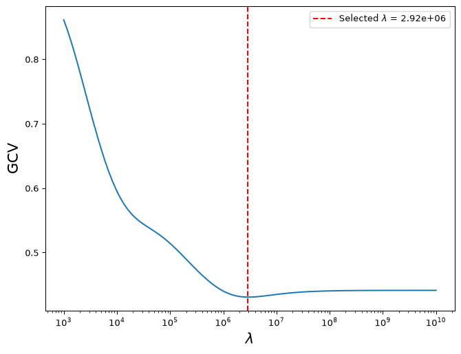
Selected lambda on this grid: 2.915e+06
Example (minus details!) continued
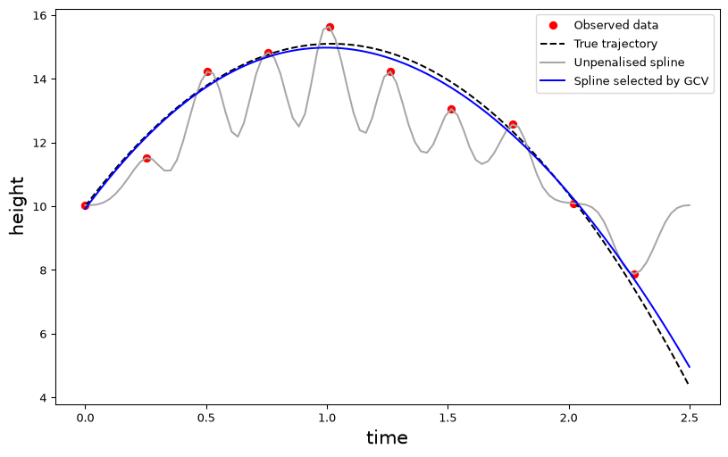
Notes:
GCV selects a value of about \(3\times10^6\) on this grid. The resulting fit sacrifices some agreement with the noisy observations and follows the underlying projectile trajectory more closely than the unpenalised spline.
The true trajectory is available here because we simulated the data. A larger penalty gives a closer fit to it in this example. GCV uses only the noisy observations to estimate prediction error, so it need not select the value that is best against the known trajectory.
The third-difference penalty agrees with the physics used to generate this example. When the physical model is approximate, stronger regularisation can worsen predictions, so the balance between data fit and model agreement needs to be checked.